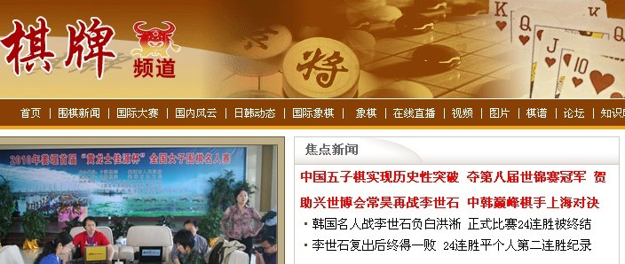

第八届五子棋世界团体锦标赛中国冠军！
#1 第八届五子棋世界团体锦标赛中国冠军！ 作者：无尽 发表时间：2010-5-5 15:24:07
2010年5月5日，请中国五子棋爱好者记住这一天，这一天上午中国五子棋代表队在日本以大比分战胜最后一个对手中国台北队，取得第八届世界连珠团体锦标赛冠军！中国现代五子棋发展近二十年，在先行者们不断努力推动下，中国棋院的领导下五子棋在中国稳步发展壮大，在世界赛场上成绩不断提高，从96年的B组世界冠军（白涛），到2007年A组世界冠军（吴镝），让世界瞩目，中国成了世界五子棋最强对手。
1996年中国以三人出战第一届连珠世界团体锦标赛，只取得了第七名。2006年、2008年中国取得了第六、七届连珠世界团体锦标赛第三名。现在中国不乏与世界高手抗衡的棋手，但由于多种原因很难以最强阵容出战世界比赛。
中国RIFCHINA非常重视今年在日本举行的第八届连珠世界团体锦标赛，第一次为此举行了全国选拔赛，最后组成了以北京棋手为主，老将殷立成七段领衔、第十一届世界连珠锦标赛季军曹冬六段挂帅，北京新秀李一四段为先锋，江苏主力奚振扬初段为勇士新老结合的次强阵容征战日本。
东道主日本队组建了1队和2队，基本囊括了日本连珠界的最强者，其中一队选手有在位名人长谷川一人九段（第5届世界个人赛A组冠军）、“战神”中村茂九段（前名人11连霸、前珠王、第1-2届世界个人赛A组冠军）、河村典彦九段（前名人、第4届世界个人赛A组冠军）、山口釉水九段（前名人、前珠王、第2届世界个人赛A组亚军、第9届世界个人赛A组季军）、矶部泰山九段（前名人）和在位珠王冈部宽八段。2队则是2老带4新的构成，分别是饭尾义弘八段、石谷信一八段、大角有希七段、田村一诚七段、长尾纪昭五段和玉田阳一五段，此次日本队对冠军是志在必得。
上届冠军爱沙尼亚则派出了2支队伍，尽管四届世界个人赛A组冠军安度九段继续缺席，但是由经验丰富的安茨（AntsSoosorv）七段带领第8届世界个人赛A组冠军泰姆拉（TunnetTaimla）八段、曾在中国学习期间取得过全国锦标赛季军的爱伏（AivoOll）等一批青年新锐出击，捍卫冠军头衔。
多届冠军俄罗斯队为夺回上届失去的冠军，本次派出由VladimirSushkov(现世界冠军)、NikonovKonstantin(现俄罗斯冠军)领衔的实力派棋手队伍，可谓来势汹汹。
这次比赛一共八支队伍，第一阶段单循环，中国队第一天旗开得胜，轻松战胜乌克兰&阿塞拜疆联队和日本2队，独得8分，但第二天比赛中国迎来强队挑战，首先被豪华舰队日本1取胜1分，接着又被俄罗斯队逼和。第三天比赛无奈与爱沙尼亚1队握手言和。第四天比赛首先以3.5：0.5战胜爱沙尼亚2队，最后一场比赛被黑马中国台北队守和。中国队艰难地以排名第三进入决赛前四循环。
由于初赛成绩带入决赛，日本1-7分，爱沙尼亚1-6分，中国5.5分，中国台北5.5分。中国保三没问题，要取得冠军难度相当大。让国人振奋的是，中国四位棋手，在决赛中表现神勇，首先从爱沙尼亚1队抢回2.5分，接着又从日本1队再抢2.5分，今天上午最后一轮胜中国台北3.5分，由于日本1以1.5分负于爱沙尼亚1队，这样中国第一次取得了世界团体赛冠军。
RIFCHINA主席那威第一时间向中国代表队取得优异成绩表示祝贺，各地五子棋爱好者以各种方式发表祝贺。
RIFCHINA已向RIF国际连珠联盟递交的第九届世界团体锦标赛主办的申请，在2012年中国将有两支甚至三支队伍在本土参与卫冕。
前方棋手发来信息，对全力财力支持中国棋手参与世界大赛，中国五子棋推动者那威老师表示感谢，对中国五子棋爱好者对这次比赛的关注与支持表示感谢。
据悉中国五子棋英雄将于明天傍晚凯旋，RIFCHINA主席那威将带在京的五子棋爱好者迎接，庆贺。
本文已被挂至新浪棋牌首页，大家可以点击“贺”字留言祝贺

［此帖子已被 无尽 在 2010-5-5 17:07:33 编辑过］
#2 Re:第八届五子棋世界团体锦标赛中国冠军！ 作者：暴力连珠 发表时间：2010-5-5 15:29:41
 世界真奇妙
世界真奇妙
#3 Re:第八届五子棋世界团体锦标赛中国冠军！ 作者：暴力连珠 发表时间：2010-5-5 15:30:53
 天道酬勤啊
天道酬勤啊
#4 Re:第八届五子棋世界团体锦标赛中国冠军！ 作者：纳米 发表时间：2010-5-5 15:32:21
赞那威的文章
是姚老师写的
［此帖子已被 无尽 在 2010-5-5 17:06:34 编辑过］
#5 Re:第八届五子棋世界团体锦标赛中国冠军！ 作者：如火流年 发表时间：2010-5-5 15:38:28
祝贺～～～#6 Re:第八届五子棋世界团体锦标赛中国冠军！ 作者：五子痴 发表时间：2010-5-5 15:47:45
5月5日 五子连珠 五星红旗升起。好多五，大家记住这一天吧！
#7 Re:第八届五子棋世界团体锦标赛中国冠军！ 作者：秋叶散人 发表时间：2010-5-5 15:51:25
曹东、李一、殷立成、奚振扬——让我们记住为国争光的英雄们！#8 Re:第八届五子棋世界团体锦标赛中国冠军！ 作者：浩瀚铭剑 发表时间：2010-5-5 16:20:50
祝贺几位大师为国争光#9 Re:第八届五子棋世界团体锦标赛中国冠军！ 作者：怪 发表时间：2010-5-5 19:37:20
 这是一个把五子棋推广的好时机啊，中国的体育项目要发展还是要看其在国际取得的成绩的。
这是一个把五子棋推广的好时机啊，中国的体育项目要发展还是要看其在国际取得的成绩的。
大师们辛苦了。
#10 Re:第八届五子棋世界团体锦标赛中国冠军！ 作者：岑小鱼 发表时间：2010-5-5 20:42:24
祝贺..
下一届估计更热闹了
#11 Re:第八届五子棋世界团体锦标赛中国冠军！ 作者：岳麓小棋后 发表时间：2010-5-5 21:06:29
今天最开心的事
#12 Re:第八届五子棋世界团体锦标赛中国冠军！ 作者：南京小飞机 发表时间：2010-5-5 21:20:57
下届可以2个队啦
#13 Re:第八届五子棋世界团体锦标赛中国冠军！ 作者：团子 发表时间：2010-5-6 0:09:30
祝贺！太高兴了，中国五子棋很行啊！看到五子棋消息上了新浪棋牌头条 ，爽呆了 ，姚老师的这篇文章写的很棒。 ［ 有志青年 于 2010-5-6 8:19:53 时奖励此帖[金币加 20 威望加1］